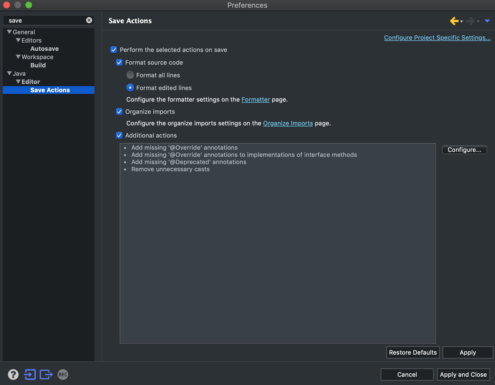
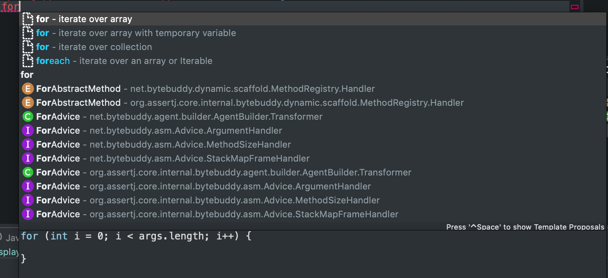
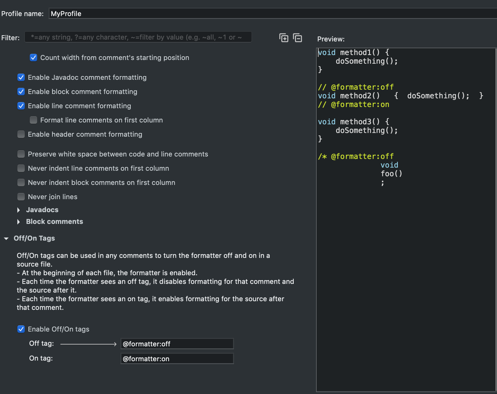
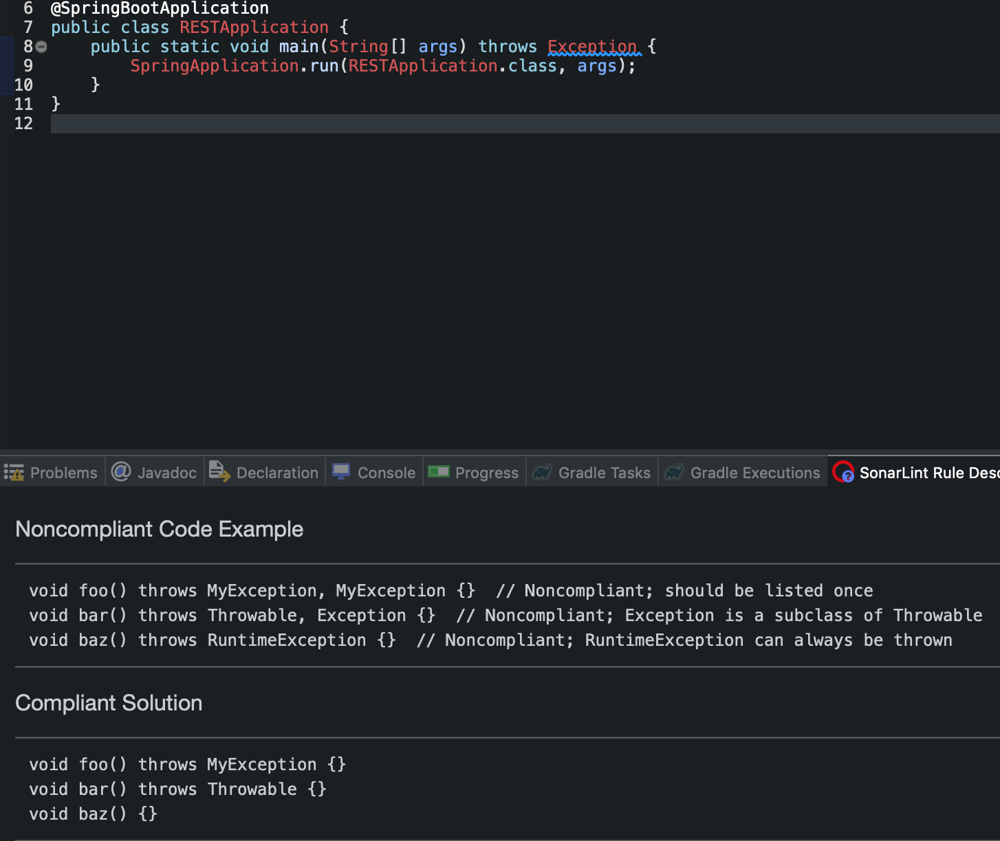

Eclipse合金装备
纯新手，刚入门，装备都是自己打的，慢慢合的，全部穿起来可以勉强出门打个稻草人。如果有什么神器出售，黑科技分享的，欢迎代价密我。
contact
Eclipse 必备功能
工欲善其事，必先利其器。
技能不点开，怎么出门和人打招呼。
- save actions：自动import，自动加annotation，自动移除不必要的cast&import，自动format。没血没蓝自动加。必须品。
- 代码再也不会有低级小黄标提醒，组队合作的时候代码format一致，方便code compare/review。
-

- content assist：自动打怪，配置好了以后，打一个字母就会快速自动提示，选取需要的属性或模版。还要高级自定义favorite。必须品。
- 代码提示，效率狂飙，可以其他组合技使用。见下。
-
preference-> search content assist, -> check enable auto activation on -> delay:50, triggers: abcdefghijklmnopqrstuvwxyzABCDEFGHIJKLMNOPQRSTUVWXYZ._
select sub tab advanced, make sure template/swt template/java proposals selected.
add needed favorite util classes/packages, then you can just call static methodname, ide will auto import. -

- type filter: all package/class in filter不会再出现在content assist里面。这样一些永远不会去选的方法就不会在出现了。比如：java.lang.object和java.awt.*的一堆方法
- formatting options: Preferences > Formatting Options > Off/On Tags 自定义一个基于标准format的profile。
-

-
Eclipse 主题外观
人靠衣装马靠鞍，码农搬砖靠外观。
装备不幻化，哪好意思出门跟人打招呼。
不废话，直接在market place下载darkest dark theme
保护视力，妈妈再也不担心你太爱学习了。
你可以在Preference > Appearance里面选择回default，如果不喜欢。
Eclipse 强化插件
装备不镶钻，衣服不打孔，武器不强化，战力被碾压
- lombok 编译自动加入getter setter等等等等template方法，必需品
- 直接下载Lombok运行jar，就会自动安装到ide，需要注意的是在你需要Lombok的project property里面开启compiler annotation process。
- 如果是maven，gradle,需要加 compileonly Lombok.jar
- sonarlint 插件必需品
- 用了就上瘾，终于知道原来写的有多搓。

- 用了就上瘾，终于知道原来写的有多搓。
- yml/json editor 可选品
- 更好的编辑常见文档
Eclipse 打怪操作
一血五杀平常事，你还质疑我操作？
总纲: 真的过一阵子不用就会忘，所以只记住一个就好了。control + shift + L查看各种骚操作快捷键, 两次进入自定义快捷键页面。实在不行还有鼠标右键。
tips:
- 直接复制一段代码，粘贴到project package explorer里面，自动生成package，class。
- 查找：
- 选取class，或者方法，鼠标右键 > reference/declare 查找。
- find in files 查找。
- open type/call hier